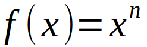
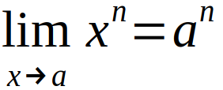
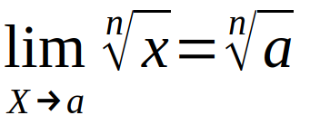

2.2 Teoremas Sobre Límites
Teorema 2.2.1:
Es fundamental tener en cuenta que: El límite de una constante (c) cuando x tiende a a es igual a la constante (a) y, El límite de X cuando X tiende a a es a.
Teorema 2.2.2:
Límite de una función multiplicada por una constante, se basa en que: El límite de una constante por una función f es la constante por el límite de f cuando X tiende a un número a
Teorema 2.2.3:
veremos tres tipos de operaciones de con límites , las cuales son: Suma, producto y cociente. Para lo cual debemos de tener en cuenta si en dado caso ambos límites existen lo siguiente:
i) El límite de una suma es la suma de los límites.
ii) El límite de un producto es el producto de los límites.
iii) El límite de un cociente es el cociente de los límites, teniendo en cuenta que el denominador no sea cero.
Teorema 2.2.4:
Límite de una potencia, podemos usar la misma manera de resolver límites como en el teorema 2.2.3 el cual dice: El límite de un producto es el producto de los límites, basándonos en el caso general en que f(x) es un factor n veces.
En caso de que sea de la siguiente manera:
El resultado según el teorema 2.2.4 nos dejaría como resultado lo siguiente:
Teorema 2.2.5:
Límite que no existe, algunas veces es posible determinar a primera vista cuando no existe un límite, basándonos en el Teorema 2.2.3 (iii) El límite de un cociente es el cociente de los límites en el cual se detalla que esta forma no se puede determinar: 0/0
Teorema 2.2.6:
Límite de una raíz, El límite de la raíz n-ésima de una función es la raíz n-ésima del límite siempre que el límite exista y tenga una raíz n-ésima real.
Un caso especial aplica en lo siguiente:
En el supuesto que a > = 0 cuando n es par
Teorema 2.2.7:
Existencia implícita unicidad, En caso de si puede haber más de un límite de una función (x) cuando x -> a